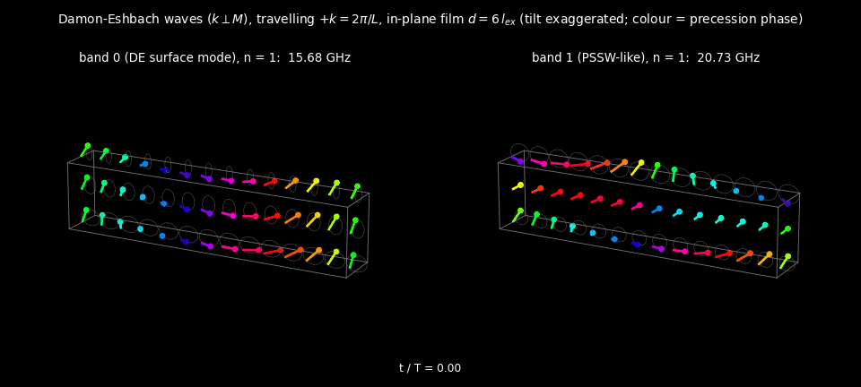
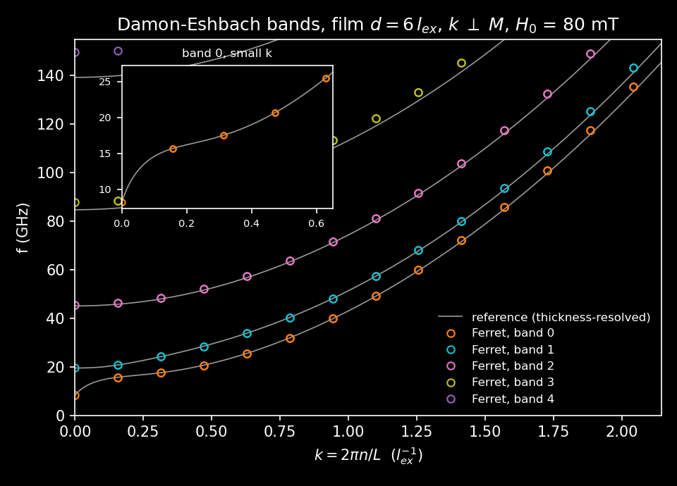

Spin waves from the eigensolver
Magnon modes of a magnetic film can be obtained directly as the eigenpairs of the linearized Landau-Lifshitz-Gilbert (LLG) equation, rather than by exciting the system and transforming a long time trace. This tutorial follows test/tests/spin_waves/sw_eigen_film.i, which computes the magnon bands of a perpendicularly magnetized film using MOOSE's Eigenvalue executioner. It uses only the standard FERRET LLG kernels - no special eigenmode objects are required.

Figure 1: Damon-Eshbach spin waves travelling perpendicular to the magnetization in an in-plane film. Left: the lowest band, a surface mode. Right: the first perpendicular standing spin wave (PSSW). Arrows show the precessing magnetization (tilt exaggerated), coloured by precession phase.
The idea
Linearizing the LLG equation about a static ground state gives
where is the Jacobian of the LLG kernels evaluated at and collects the time-derivative terms. Writing turns this into the generalized eigenproblem
and for zero damping the eigenvalues come in purely imaginary pairs. The magnon frequencies are therefore the imaginary parts of the eigenvalues.
MOOSE builds for free, because it is the same Jacobian the Newton solver already assembles. The only thing the input has to supply is .
Supplying the mass matrix
The transverse components and are the dynamic variables, so is built from one CoefReaction per component, tagged into the eigen vector:
[Kernels]
[exchange_x]
type = MasterExchangeCartLLG
variable = mag_x
component = 0
block = film
[]
[exchange_z]
type = MasterExchangeCartLLG
variable = mag_z
component = 2
block = film
[]
[field_x]
type = MasterInteractionCartLLGHConst
variable = mag_x
component = 0
block = film
[]
[field_z]
type = MasterInteractionCartLLGHConst
variable = mag_z
component = 2
block = film
[]
[magnetostatic_laplace]
type = Electrostatics
variable = potential_H_int
block = 'film vacuum'
[]
[mag_x_time]
type = CoefReaction
variable = mag_x
coefficient = -1.0
extra_vector_tags = 'eigen'
block = film
[]
[mag_z_time]
type = CoefReaction
variable = mag_z
coefficient = -1.0
extra_vector_tags = 'eigen'
block = film
[]
[magnetostatic_source]
type = MagHStrongCart
variable = potential_H_int
block = film
[]
[]
The extra_vector_tags = 'eigen' entry is what places these terms on the right-hand side of the generalized eigenproblem instead of in the residual. MagHStrongCart supplies the magnetostatic source term, so the mode frequencies include the dipolar field.
The static physics comes from film_common.i, which is shared with the ring-down test and uses only stock objects - MasterExchangeCartLLG for exchange, MasterInteractionCartLLGHConst for the Zeeman term, and Electrostatics for the magnetostatic potential on a graded vacuum region surrounding the film.
The eigensolver
[Executioner]
type = Eigenvalue
solve_type = KRYLOVSCHUR
eigen_problem_type = GEN_NON_HERMITIAN
which_eigen_pairs = TARGET_MAGNITUDE
n_eigen_pairs = 8
n_basis_vectors = 24
eigen_tol = 1e-12
initial_eigenvalue = 1e12
petsc_options_iname = '-st_type -eps_target -st_pc_type -st_pc_factor_mat_solver_type'
petsc_options_value = 'sinvert 0 lu mumps'
[]
A shift-and-invert spectral transform (-st_type sinvert) targeted at zero picks out the lowest modes, which are the ones of physical interest. initial_eigenvalue = 1e12 is required: the default initial guess puts SLEPc in the wrong part of the spectrum and the solve fails to converge. MUMPS is used for the inner factorization, and n_eigen_pairs = 8 returns four pairs.
Reading the frequencies out
Eigenvalues arrive as a VectorPostprocessor, and individual bands are pulled out with VectorPostprocessorComponent. Because the eigenvalues come in conjugate pairs, band sits at index :
[VectorPostprocessors]
[eigenvalues]
type = Eigenvalues
execute_on = 'timestep_end'
[]
[]
The last two objects are worth highlighting. rel_kittel compares the frequency against the analytic Kittel result , and a Terminator aborts the run if the two disagree by more than one part in :
[UserObjects]
[kittel]
type = Terminator
expression = '!(abs(rel_kittel) < 1e-10)'
fail_mode = HARD
error_level = ERROR
message = 'k = 0 eigenvalue is not the Kittel frequency g0 (H0 - Ms)'
execute_on = 'timestep_end'
[]
[]
The input therefore asserts its own correctness. This is the recommended pattern for FERRET inputs that have an analytic limit - it turns a silent numerical error into a hard failure.
Results
For in-plane magnetization and propagation perpendicular to , the modes are Damon-Eshbach waves. The lowest band is the surface mode and the higher bands are perpendicular standing spin waves quantized across the film thickness, as shown in Figure 1.

Figure 2: Damon-Eshbach band structure of the film, compared against the Kalinikos-Slavin analytic dispersion.
Related inputs
Three further inputs in the same directory build on this one:
sw_ringdown_film.iexcites the film and extracts the same frequencies from a time trace, as an independent check of the eigensolve.sw_eigen_vs_ringdown.icompares the two and fails if they disagree.afm_skyr_modes.icomputes modes about a non-uniform ground state - an antiferromagnetic skyrmion - rather than about a uniformly magnetized state.